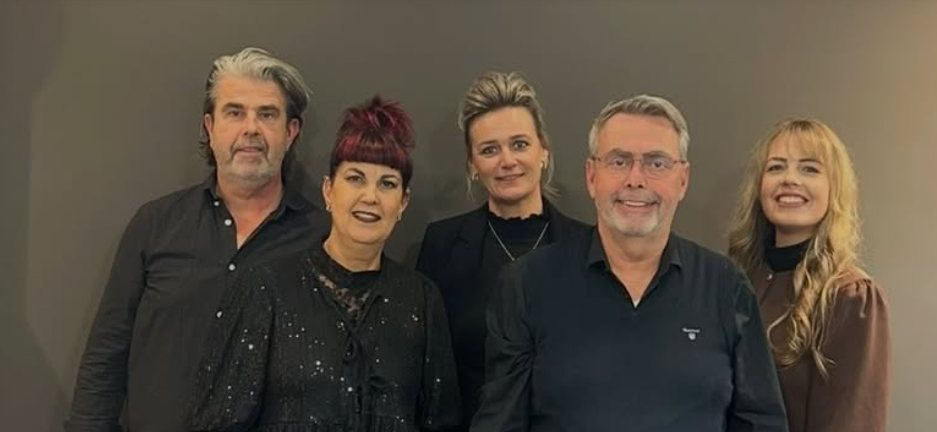
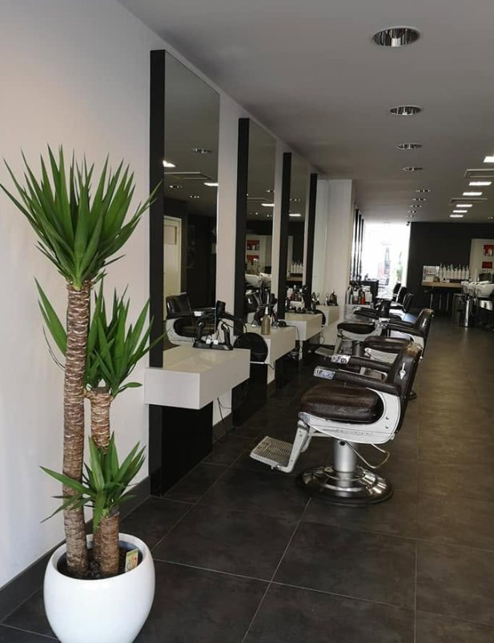

Case — Website · live op Vercel · 2026
John's Hairshop
Website voor een kapsalon met dertig jaar ervaring in Venlo en Blerick. Het verhaal, de dienstverlening, de tarieven en een afspraak maken — zonder dat een klant hoeft te bellen om te vragen wat iets kost.

De uitdaging
Een salon die al jaren draait op mond-tot-mondreclame. Wie online zoekt naar een kapper in de regio moet meteen zien: dit is de zaak, dit doen ze, dit kost het, en hier maak je een afspraak.
Wat er op de site staat
- Bovenaan het verhaal: al dertig jaar jouw kapper in Venlo en Blerick
- Dienstverlening met een glimlach, kort en zonder jargon uitgelegd
- Tarieven die gewoon leesbaar zijn, zodat niemand hoeft te bellen voor een prijs
- Het merkverhaal: trotse ambassadeur van Keune
- Nieuws uit de salon, zodat de site niet stilstaat
- Direct een afspraak maken als rode draad door de hele pagina

Resultaat
Een snelle eenpager die op mobiel net zo goed werkt als op desktop, met de afspraak-knop altijd binnen bereik. De site staat live op Vercel en is te bekijken op johnhairshop.vercel.app.
Ook een zaak die online moet kloppen?
Van kapsalon tot horeca: ik maak een site waarin klanten meteen zien wie je bent en hoe ze bij je terechtkomen.
Bespreek jouw website →